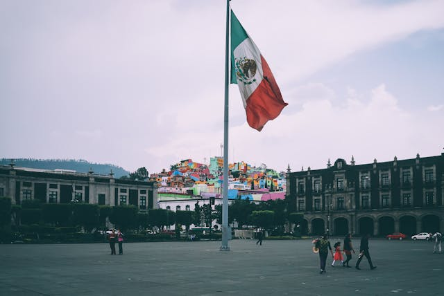

About Me
Born in Ciudad Juarez, Chihuahua the 8th of October of 2003, I grew quite acquainted with american/mexican culture I grew to love the city life. My family was always devoted to Jesus Christ and they taught me well. I currently reside in Durango, Durango where I'm able to enjoy the company of my family, alongside pursuing proper studies and enjoying my passion for music.
Mexico
Mexico is a bright and lively country located between the United States and Central America, with beautiful beaches on both the Pacific Ocean and the Gulf of Mexico. Full of warm culture, rich traditions, and tasty food, it’s a place where every day feels like a special celebration. I've lived here my entire life and I'm very grateful for the opportunities I have come across here, adn the mentality of resilience I've grown with. Love it.
Web Dev Resources
These are some resources I've found helpful: